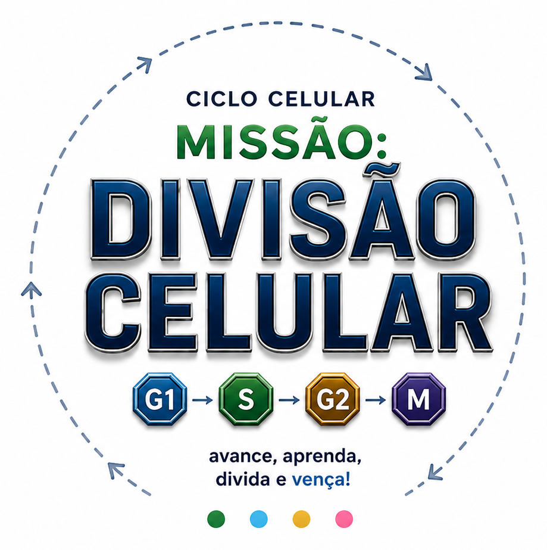
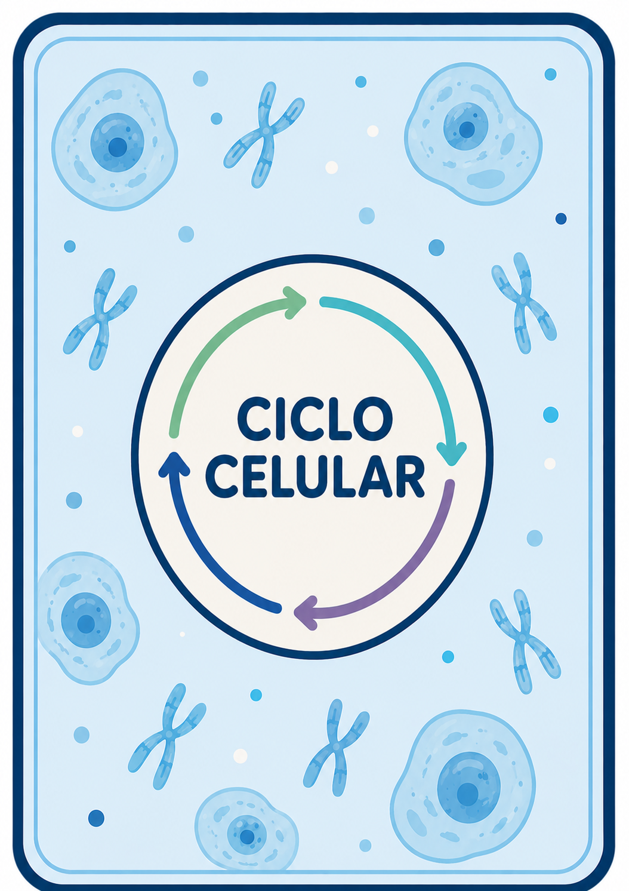
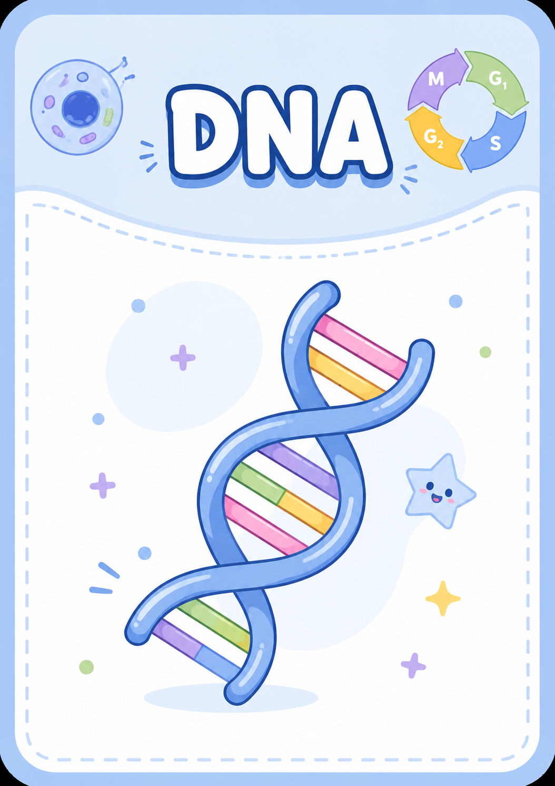

Objetivo: juntar pelo menos 2 ATPs e 2 proteínas para avançar para a fase S.
Cada proteína é formada automaticamente ao juntar 20 aminoácidos.
Ao chegar no checkpoint, o jogador decide se paga 2 ATPs e 2 proteínas para avançar ou se continua coletando recursos.
Ao passar por uma casa AA, o jogador ganha 1 aminoácido.
Ao parar em AA, o dado é jogado e o valor tirado é a quantidade de aminoácidos recebida.
Ao parar em ATP, o jogador ganha 1 ATP.
Ao avancar para S, o jogador recebe 1 carta DNA e o peao muda para marcar a nova fase.
A sintese dura duas voltas: no primeiro checkpoint paga 2 ATPs para abrir a fita molde.
No segundo checkpoint paga 1 ATP e 1 proteina para concluir a replicacao, recebe a segunda carta DNA e avanca para G2.
Se faltar ATP no checkpoint da fase S, pode trocar proteinas por ATP na razao 1 por 1. Se ainda faltar recurso, sofre apoptose e perde o jogo.
Na fase S, passar ou parar em AA consome 1 aminoacido.
Ao entrar em G2, o jogador passa para o tabuleiro interno e precisa possuir 2 cartas DNA.
Para avancar para a Mitose, precisa de 4 ATPs e 2 proteinas mitoticas.
No checkpoint interno, 2 proteinas comuns formam 1 proteina mitotica.
Ao completar uma volta em G2, o jogador ganha 1 ATP.
AA, ATP e Evento funcionam como na G1: passar por AA ganha 1 aminoacido, parar em AA rola o dado azul, parar em ATP ganha 1 ATP e Evento sorteia carta da fase G2.
A Mitose acontece no tabuleiro interno em Profase, Metafase, Anafase/Telofase e Citocinese.
Na Profase, ao completar uma volta paga 1 ATP e 1 proteina mitotica para avancar. Se faltar recurso ou DNA, volta para G2.
Na Metafase, ao chegar no checkpoint rola o dado: 1 ou 2 desalinha e reinicia a Metafase; 3 a 6 avanca.
Na Anafase/Telofase, paga 1 ATP e 1 proteina mitotica para concluir a Citocinese e vencer.
Depois da Profase, passar por AA nao coleta recurso; parar em AA ainda rola o dado azul.
O jogador é obrigado a parar no checkpoint, mesmo que o dado tenha casas sobrando.
Se não conseguir nenhum ATP na volta, pode trocar 2 proteínas completas por 1 ATP ao chegar no checkpoint.
Se ainda não tiver recursos suficientes, continua em G1 até chegar novamente ao checkpoint.
Ao parar em Evento, o jogador sorteia uma carta da fase G1 com bônus, ônus ou efeito neutro.
Dano celular existe uma casa antes do checkpoint. Ao parar nela, perde 1 ATP e 1 proteína para reparar a célula.
Se não possuir recursos suficientes no dano celular, sofre apoptose e reinicia no checkpoint sem recursos.
Selecione quem vai participar desta partida.
Entre para liberar comandos de teste.
Os comandos de recurso afetam o peão da vez.
Clique em uma carta para revelar o evento.
Jogador ganhou uma Carta DNA.

